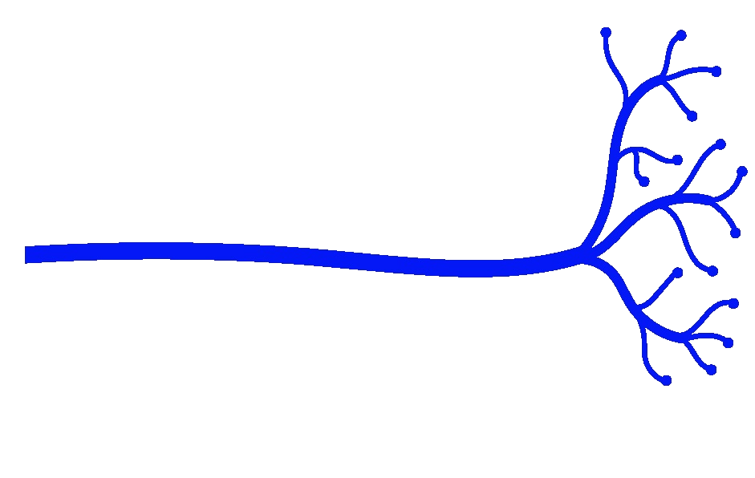
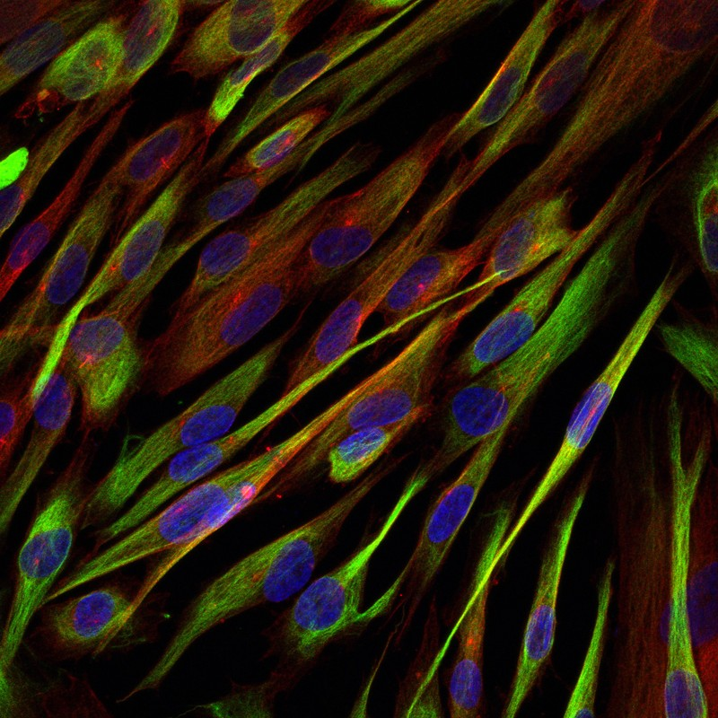

PulpNeuro uses dental pulp stem cells (DPSC) to build patient-specific neuronal models of rare neurogenetic diseases — faster, cheaper, and more scalable than iPSC approaches.
Induced pluripotent stem cells (iPSC) have been the gold standard for patient-derived neuron models — but they require viral reprogramming, take 60–84 days to produce neurons, and cost $1,500+ per vial. For rare diseases affecting thousands of children, that timeline and cost is prohibitive.
Dental pulp stem cells (DPSC) are a fundamentally better starting material for neurogenetic disease modeling. They're neural crest-derived, epigenetically closer to embryonic stem cells than iPSCs, and they differentiate directly into functional neurons in 6–7 weeks — no viral reprogramming required.
See the platform →
Our validated 3-step protocol converts DPSC into functional cortical-like neurons in 4–6 weeks. No viral reprogramming. Multiple biological replicates per genotype.
DPSC-derived brain organoids measured by multielectrode array (MEA) provide real-time seizure and firing rate readouts in 3D patient-specific tissue models.
Platform-ready for ASO validation, small molecule and natural product screening, and CRISPR-Cas9 gene correction — all in patient-matched neuronal backgrounds.
PulpNeuro's cell library spans 15 rare neurogenetic syndromes, with deep expertise in chromosome 15q imprinting disorders — currently a focus of ASO therapeutics by several companies.
The most frequent chromosomal cause of autism. 36 cell lines across multiple individuals.
UBE3A-driven severe intellectual disability with seizures. 23 cell lines; CRISPR and ASO target.
Paternal 15q11-q13 loss with circadian rhythm defects revealed in our neurons. 46 cell lines.
Because DPSC come directly from a child's shed tooth, we can generate neurons from any individual with any rare variant — then test therapies in their neuronal background. ASO efficacy, CRISPR correction efficiency, seizure pharmacology tuned to receptor polymorphisms: all validated in the patient's own cells.
Our precision medicine approach